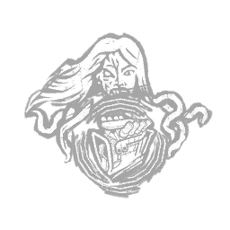
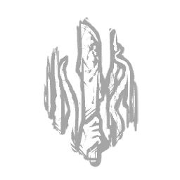
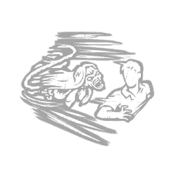

浮屠鬼 Krasue
- 难度
- 2
- 移速
- 4.6
- 恐惧范围
- 32 米Body Form 40 米Head Form
- 能力
- 无躯之肉
- 性别
- 女性
- 出身
- Thai
- 演员
- ["Body Form: Organ Prawang (Opera Singer)", "Head Form: Roxana B.L. (The Monster Factory)"]
背景故事
布荣·素卡帕在泰国的歌剧排练中情绪翻涌，可尽管拼尽全力，她始终只是个替补演员。最初那个想把天赋分享出去的愿望，渐渐变成了对名望无法撼动的渴求。儿时好友詹吉拉是她最大的支持者，可除了一个能让她伏案痛哭的肩膀，她所能给予的少得可怜。直到玛莱——一位迅速在圈中崭露头角的同行歌手——主动找上门来，布荣的命运才就此改变。玛莱拿来一个玻璃瓶，里面盛着透明的液体，语气无比郑重地让她喝下：每一个夜晚，都会有另一个存在住进你的身体——但你会像我在台上那样功成名就。布荣被这场古怪的游戏逗笑了。即便如此，她却比任何时候都更想相信它是真的。她抓过那瓶子，一滴不剩地吞了下去。接下来的几个星期里，布荣的皮肤变得前所未有地柔嫩，而她发现自己嗓音的深处，竟藏着一种从未存在过的厚度。在下一次试音中，导演被那回荡在剧院穹顶下的声音彻底迷住了。歌声结束时，布荣向导演道谢，随后咳出一口血，咳进一方手帕里。她把手帕塞进口袋，选择了不闻不问。她身上正在发生的一切都是有效的——她现在绝不敢停下。那一夜，她沉沉睡去，一股抚慰般的暖意顺着身体淌下。她猛地坐直身子，手在黑暗中摸索着一盏根本不存在的油灯。她躺在一片陌生的院子里，浑身覆满鲜血。而在她身旁，是一个被摧残得支离破碎的孩……
专属技能

咒术：厄运序曲
Hex: Overture of Doom

饥渴难耐
Ravenous

游移之眼
Wandering Eye
通用技能 任意杀手均可使用
苦涩低语
Bitter Murmur
淘汰弱者
Cull the Weak
捕鹿人
Deerstalker
煎熬
Distressing
咒术：命运愚者
Hex: Fortune's Fool
咒术：无人幸免于死
Hex: No One Escapes Death
咒术：狩猎快感
Hex: Thrill of the Hunt
黑暗中
In the Dark
隐秘
Insidious
铁掌
Iron Grasp
让他们等着
Keep Them Waiting
毫无保留
No Holds Barred
血狱钩：怪诞圣地
Scourge Hook: Monstrous Shrine
血狱钩：泣血之伤
Scourge Hook: Weeping Wounds
看他们逃窜
See How They Run
破碎希望
Shattered Hope
邋遢屠夫
Sloppy Butcher
暗影间谍
Spies from the Shadows
表现失常
Underperform
不依不饶
Unrelenting
耳语
Whispers
附加品
- 稀有 破碎王冠 Broken Tiara
- 活动 鸡头 Chicken Head
- 罕见 玛来糕块 Chunk of Malai
- 罕见 揉皱的乐谱 Crumpled Sheet Music
- 罕见 失灵节拍器 Defective Metronome
- 精贵 钝刀 Dulled Knife
- 稀有 第一部剧本 First Libretto
- 精贵 装框报纸 Framed Newspaper
- 精贵 占吉拉的手 Janjira's Hand
- 传说 洛伦莎的遗骸 Lorenza's Remains
- 稀有 倒霉老鼠 Luckless Mouse
- 传说 神秘药剂 Mysterious Elixir
- 罕见 猪眼 Pig's Eye
- 传说 女王权杖 Queen's Sceptre
- 传说 腐烂猪 Rotten Swine
- 活动 撕碎的长袍 Shredded Gown
- 精贵 飞溅血点手帕 Spattered Handkerchief
- 稀有 粘性含片 Sticky Lozenge
- 精贵 剧场望远镜 Theatre Binoculars
- 罕见 蠕动的寄生虫 Wriggling Parasite